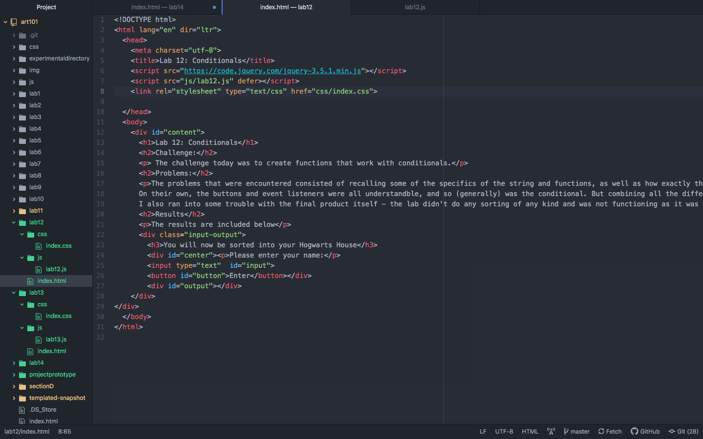
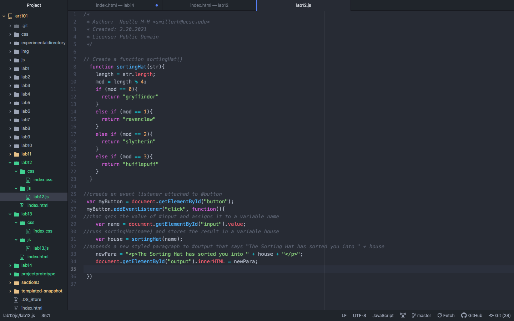
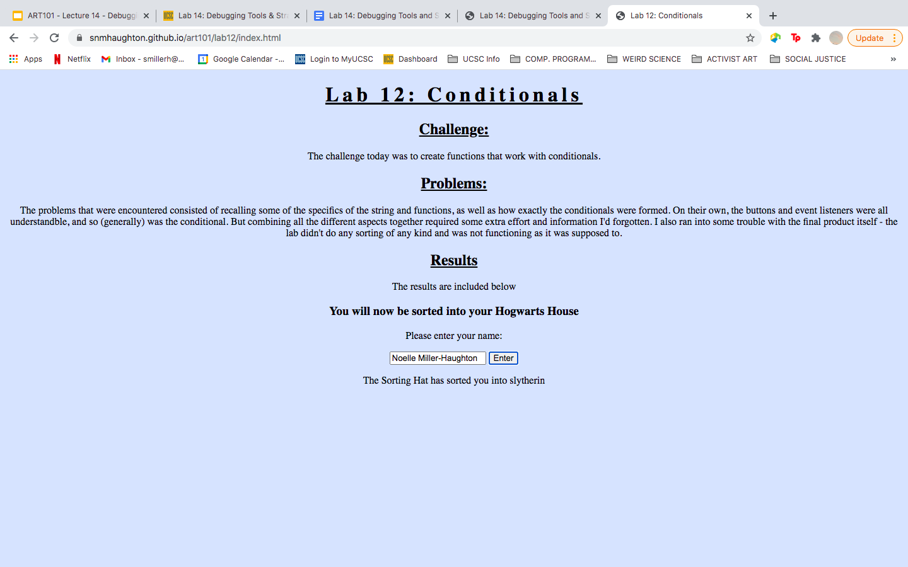

Lab 14: Debugging Tools and Strategies
Challenge
Today's challenge is debugging and working on old code and labs.
Problems:
The problems with this lab occurred with figuring out the specific issues in the labs I had trouble with (I didn't finish them for a reason) and coming up with solutions.
Results
The results are in the pdf for the lab.
Debugging
Here are the images for the reuploaded labs - labs 12 and 13 were the ones with issues that I found during the debugging.
Lab 12 was the first lab I attempted to debug. The lab involved working with conditionals, and I had an extremely difficult time getting it to work - I was unable to get the button to print the name sorted into the Hogwarts House. I couldn't figure out if I had incorrectly linked something, why there was an error in the console for the token "=", or what had ultimately gone wrong. When I went back into the lab and the console wasn't showing me anything, I just combed through the code and realized I had forgotten to put in the jquery link at all in my index.html. I had also written "innerhtml" instead of "innerHTML", and I wonder if that was messing something up too. Additionally, one of the elements didn't have a closing tag. When I fixed all of these, the lab worked and sorted the name! Below are the screenshots of the working code in atom, as well as the new published site.
   Next came Lab 13. In terms of what went wrong in this lab, I wasn't entirely sure. I thought maybe it had something to do with the numbers I had chosen for the fizz and the buzz and the boom. This lab was concerned with loops, and those were very difficult for me to understand.
I thought maybe the math or multiples was wrong. It wasn't printing anything, and the console was producing an incorrect sequence of numbers. Ultimately for this lab I tried an entirely different code, because I thought the problem was that I had only done the string at the beginning and end and not for each individual element.
So I added oneLongString += num + " - FizzBuzzBoom!
"; after every statement (changing what it produced). I also brought back the "else if" statements, because an example Wes showed in class had this. I thought this would be correct but ultimately it was not enough to save this lab, and there was still an error in the console for an "unexpected token 'else'".
I've included screenshots of the updates I made, but there is no final working lab for lab 13.